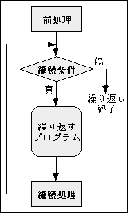

講義に入る前に shori2 にカレントディレクトリを移しておいてください。
次の代入によって、 変数 x の内容を a だけ増すことができます。
x = x + a |
これは x + a の結果を x に代入します。 代入演算子を用いれば、 これを次のように書くことができます。
x += a |
同様に、下の左のようなの代入は、右のようにも書くことができます。
| y = y - b | → | y -= b |
|---|---|---|
| k = k * (i + j) | → | k *= i + j |
| l = l / (i * j) | → | l /= i * j |
特に変数の内容を１だけ増す、 あるいは１だけ減じる場合は、 次のような演算子を使うことができます。
| i = i + 1 | → | i += 1 | → | ++i |
| i = i - 1 | → | i -= 1 | → | --i |
++、-- は変数にだけ適用できる単項演算子で、 それぞれインクリメント演算子、 デクリメント演算子と呼ばれます。 これらは上記のように変数の左側に書く場合の他、 右側に書く場合もあります。 左側と右側では変数に対する効果（１加減する）は同じですが、 その演算を評価したときの値が異なります。
i = 1; // ここで i は 1 になる j = ++i; // ここで i が 2 になって、それが j に入る |
上の例では i も j も 2 になります。 j には i の内容が１増やされた後の値が入ります。
i = 1; // ここで i は 1 になる j = i++; // ここで j に 1 を入れてから i は 2 になる |
上の例では i は 2、j は 1になります。 j には i の内容が１増やされる前の値が入ります。
整数の割り算を、引き算の繰り返しで計算することを考えてみます。
この方法で７÷３を求めてみます。
| 被除数 | 除数 | |||
|---|---|---|---|---|
| ７ | ≧ | ３ | なので、７－３＝４（１回目の引き算） | |
| ４ | ≧ | ３ | なので、４－３＝１（２回目の引き算） | |
| １ | ＜ | ３ | なので、剰余＝１、商（引き算の回数）＝２ |
変数 x を被除数、y を除数として、この手順をプログラムに書いてみます。 被除数が除数以上の間、被除数から除数を引くことを繰り返すわけですから、 これには while を使います。
void warizan(int x, int y) {
int kaisu = 0; // 引き算の回数を数える変数
while (x >= y) { // x >= y の間、以下の処理を繰り返す
x = x - y; // 引き算の実行して結果を被除数にする
kaisu = kaisu + 1; // 引き算の回数をカウント
}
cout << "商は" << kaisu << "、剰余は" << x << endl;
} |
while というキーワードを使えば、 ある条件が成立する（真である）間、 同じ処理を繰り返すことができます。 while の後に続く ( ) 内の条件（継続条件）が真なら、 その直後の { } 内の処理を実行して、もう一度継続条件を調べます。 そのとき継続条件が真なら同じことを繰り返します。 なお、上の例において x = x - y は x -= y、 kaisu = kaisu + 1 は ++kaisu と書くことができます。
void warizan(int x, int y) {
int kaisu = 0; // 引き算の回数を数える変数
while (x >= y) { // x >= y の間、以下の処理を繰り返す
x -= y; // 引き算の実行して結果を被除数にする
++kaisu; // 引き算の回数をカウント
}
cout << "商は" << kaisu << "、剰余は" << x << endl;
} |
if と同様に while ( ) に続く { } 内が単一の文のときは、 { } を省略できます。上の例で剰余を求めるだけなら kaisu の計算は不要ですから、 そのような場合は次のように書いても構いません。
while (x >= y) x -= y; |
キーボードから整数入力を一つ入力し、 「１～その数」までの合計を求めるプログラムを、 以下の方法で作ってください。 n (n + 1) / 2 という公式は使っちゃいけません。
キーボードから入力した整数を n という変数に格納するとします。
また合計を sum という変数に格納するとします。 この初期値はもちろん 0 です。
「1～n の合計を求める」という処理は、 以下のような計算を繰り返すことになります。
だからといってこの通りにプログラムすることはできません。
sum += 1; // 0 + 1 = 1 → 1～1 の合計 sum += 2; // 1 + 2 = 3 → 1～2 の合計 sum += 3; // 3 + 3 = 6 → 1～3 の合計 ... sum += n; // → 1～n の合計
sum には 1, 2, 3, ... , n というように１ずつ増えていく数を加えていくわけですから、 ここに変数（例えば i）を使って ++i のように表せばうまくいきそうです。 もちろんこの i の初期値も 0 にしておきます。 すると上の計算は次の１行で表すことができます。
sum += ++i;
したがって、これを i が n より小さい間繰り返して、 この条件を満たさなくなったら sum を出力すればよいことになります。
メールにソースプログラムを添付して tokoi まで送ってください。Subject:（件名）は kadai15 としてください。
標準入力（コンソール）から一つデータを入力したい時は、 cin から抽出演算子 >> を使って、 データを変数に格納します。
#include <iostream.h>
main() {
int data1;
cin >> data1; // キーボードから読み込んだ整数値を data1 に格納
...
} |
データが２つ以上あるときは次のように書くことができます。
#include <iostream.h>
main() {
int data1, data2;
// キーボードから読み込んだ整数値を data1 と data2 に格納
cin >> data1 >> data2;
...
} |
これは cin >> data1 という式の値が cin なので、 それに対して続けて抽出演算子 >> を適用しているわけです。 したがって、これを次のように別けて書いても構いません。
#include <iostream.h>
main() {
int data1, data2;
cin >> data1; // キーボードから読み込んだ整数値を data1 に格納
cin >> data2; // キーボードから読み込んだ整数値を data2 に格納
...
} |
データがもっとたくさんあるときは、この行を増やしていけば良いことになります。 しかし、そういうときには普通 while などを使って繰り返します。
#include <iostream.h>
main() {
int data;
cin >> data;
while (data != 0) {
...
cin >> data;
}
...
} |
このプログラムは、入力データが 0 の時に繰り返しを終了します。 しかし、0 もデータとして使いたい場合もあるんじゃないかと思います。
そういう場合は、 入力が「データの終り」に達したときに繰り返しをやめるようにします。 キーボードからデータを入力する場合、 入力が「データの終り」に達したことをプログラムに知らせるには、 Ctrl-D（Ctrl キーを押しながら D） をタイプします。
% a.out[Enter] 10[Enter] 20[Enter] Ctrl-D （←入力の終了） |
cin からの入力が「データの終り」に達したとき、 cin の値は 0 になります。 したがってこの繰り返しは、次のように書くことができます。 なお、cin が 0 のときには、 変数（この場合 data）へのデータの格納は行われません。
#include <iostream.h>
main() {
int data;
cin >> data;
while (cin != 0) {
...
cin >> data;
}
...
} |
while の継続条件は、( ) 内が「非０」なら「真」なので、 != 0 という等値演算は省略することができます。
#include <iostream.h>
main() {
int data;
cin >> data;
while (cin) {
...
cin >> data;
}
...
} |
cin >> data という式の値も cin ですから、これを次のように書くこともできます。
#include <iostream.h>
main() {
int data;
while (cin >> data) {
...
}
...
} |
課題１５では変数 i を 1 ずつ増やしながら sum に足して、 1 ～ n の合計を求めました。 ここでは、この i の値を１ずつ増やす代わりに、cin から入力したデータを使って、 キーボードから入力した数値の合計を求めるプログラムを作成してください。
すべての数値を入力して、 最後に Ctrl-D をタイプしたあとに答が出るようにしてください。
% a.out[Enter] 8[Enter] 5[Enter] 7[Enter] Ctrl-D （←入力の終了） 20 （←答） |
メールにソースプログラムを添付して tokoi まで送ってください。Subject:（件名）は kadai16 としてください。
int i;
i = 0;
while (i < 5) {
cout << "おはようさん" << endl;
++i;
} |
for というキーワードを使えば、これを次のように簡略化できます。
for (i = 0; i < 5; ++i) {
cout << "おはようさん" << endl;
} |
これも for ( ) に続く { } 内が単一の文のときは、{ } を省略できます。
for (i = 0; i < 5; ++i)
cout << "おはようさん" << endl; |

for の ( ) 内は ;（セミコロン）に区切られた３つの部分からなり、 それぞれ「前処理」「継続条件」「継続処理」を記述します。 これらは右のような順序で実行されます。
for (前処理; 継続条件; 継続処理) {
繰り返すプログラム;
...
}
上の例では、i は 0→1→2→3→4 と変化し、
i == 5 となったときに継続条件を満たさなくなり、
繰り返しを終了します。
for の用途は while 同様、 一定回数の繰り返しだけに限りません。 while のところで例に使った割り算のプログラムを、 for を使って書き換えてみましょう。
- 前処理
- この場合の前処理は変数 kaisu の初期値を 0 にすることですが、 これは kaisu は定義の際に 0 で初期化しているので、 ここでは前処理は不要です。
- 継続条件
- while の条件同様 x >= y にします。
- 継続処理
- これは x -= y と ++kaisu のどちらでもいいでしょう。 ここでは後者を指定することにします。
void warizan(int x, int y) {
int kaisu = 0; // 引き算の回数を数える変数
for (; x >= y; ++kaisu) {
x -= y; // 引き算の実行して結果を被除数にする
}
cout << "商は" << kaisu << "、剰余は" << x << endl;
} |
for の前処理、継続条件、継続処理はいずれも省略することができます。 継続条件を省略すると、処理を無限に繰り返します（無限ループ）。
for (;;) { ... } // 無限ループ |
なお while の場合は ( ) 内の継続条件を省略できません。 上と同じことを行うには、継続条件に真の値（非 0 の整数値）を指定します。
while (1) { ... } // 無限ループ |
関数のグラフを描くプログラムを考えてみます．
まず，手始めにキーボードから入力した数値の数だけ， '*' 印を出力するプログラムを作ってください．
% a.out[Enter] 数を入れてください: 5[Enter] ***** % a.out[Enter] 数を入れてください: 13[Enter] ************* |
これは '*' を一つ出力する処理を、 その数だけ繰り返せば実現できます。
cout << '*';
繰り返しの終了後に行末文字を出力します。
cout << endl;
この繰り返しの回数を， キーボードから入力する代わりに， 関数を使って決めることで、グラフを描きます。 ここでは sin 関数を使ってみましょう．
sin 関数の値は -1 ～ 1 の範囲にありますから、 これを出力する '*' の数の範囲に置き換える必要があります。 ウィンドウの１行の文字数が標準で 80 ですから， 出力する '*' の数の範囲は，とりあえず 0 ～ 50 位の範囲にします． 25 * (sin(x) + 1.0) とすれば，この範囲の数値が得られます．
上の x を変化させながら上式の値を '*' を出力する繰り返しの回数に用いれば， 関数のグラフを描くことができます．
% a.out[Enter] ************************* ******************************** *************************************** ********************************************* ************************************************ ************************************************** ************************************************ ********************************************* *************************************** ******************************** ************************ ***************** ********** **** * * **** ********** ***************** ************************* |
sin 関数の引数 x の単位はラジアンで，１周期の値の範囲は 0 ～ 2πです． １周期を 20 に分割した場合， 整数型の変数（ここでは j）を 0 ～ 20 に変化させるとして， x = 2 * 3.1415926536 * j / 20 で求めることができます．
したがって，
この方針で最初に作ったプログラムを修正し， sin 関数のグラフを描くプログラムを作成してください．
メールにソースプログラムを添付して tokoi まで送ってください。Subject:（件名）は kadai17 としてください。
処理を繰り返す手段として、for や while のほかに do ～ while があります。 これは do と while の間に繰り返すべきプログラムを書きます。
int i = 5;
do {
cout << "おはようさん" << endl;
}
while (--i > 0);
|
while () { ... } とは異なり、 継続条件の判定を { ... } の実行後に行うため、 少なくとも１回は処理を実行します。
上の例では、i の初期値が 1 でも 0 でも、 「おはようさん」が１回表示されます。
while のような繰り返しを継続条件以外の要因で終了させたり、 途中をはしょったりするために、 break と continue というキーワードが用意されています。
- break
- 繰り返しをそこで打ち切ります。
- continue
- 繰り返し部分の残りの処理を飛ばします。
下の例は i == 3 になったところで break が実行されて for による繰り返しが終わるので「2 回目」までしか出力されません。
int i;
for (i = 0; i < 5; ++i) {
if (i == 3) break;
cout << i << " 回目" << endl;
} |
% a.out[Enter] 1 回目 2 回目 （←ここで処理が終わってしまう） |
下の例は i == 3 になったところで continue が実行されて 残りの部分が飛ばされるので「3 回目」が出力されません。
int i;
for (i = 0; i < 5; ++i) {
if (i == 3) continue;
cout << i << " 回目" << endl;
} |
% a.out[Enter] 1 回目 2 回目 4 回目 （←「3 回目」が飛ばされた） 5 回目 |
次のプログラムは、ある決められた数（金額、この場合は１万円）から、 キーボードから入力した数（支出額）を減じてゆき、 残り（残額）が０以下になったら終了するプログラムです。
#include <iostream.h>
int main(void) {
int budget, payment;
budget = 10000;
while (budget > 0) {
cout << "支出額を入れてください：";
cin >> payment;
budget -= payment;
cout << "残額は " << budget << " 円です。" << endl;
}
return 0;
} |
このプログラムは残額が０以下になるまで終了しません。 そこで支出額を入力するかわりに Ctrl-D をタイプしたときは、 残額が０以下でなくても途中で終了するように、 このプログラムに１行追加してください。 メールに変更したソースプログラムを添付して tokoi まで送ってください。Subject:（件名）は kadai18 としてください。
次の１つ目のプログラムの break は switch の処理からの脱出になるため、 ２つ目のプログラムのように for による繰り返しを終了することはできません。
for (;;) {
cout << "終了する場合は 0 を入れてください：";
cin >> key;
switch (key) {
case 0:
cout << "プログラムを終了します" << endl;
break; // この break は switch から抜け出すだけ
}
} |
for (;;) {
cout << "終了する場合は 0 を入れてください：";
cin >> key;
if (key == 0) {
cout << "プログラムを終了します" << endl;
break; // この break は for による繰り返しを終了する
}
} |
上の１つ目の例のように switch を使った場合に、 ２つ目の例のように for の外側まで脱出したいときには、 goto を使うことができます。
for (;;) {
cout << "終了する場合は 0 を入れてください：";
cin >> key;
switch (key) {
case 0:
cout << "プログラムを終了します" << endl;
goto out_of_loop; // out_of_loop というラベルに直行
}
}
out_of_loop:
cout << "終了" << endl;
|
「goto ラベル;」とすると、 そこから（同じ関数内にある）「ラベル:」が書かれたところに処理を移します。 ラベル名の付け方は変数名と同じです。 「ラベル:」の後には文が必要です。 実行する処理がなければ、空文（セミコロン ";" のみ）を置いてください。
for や while による繰り返しが２重になっている場合も同様です。
for (i = 0; i < 100; i++) {
for (j = 0; j < 100; j++) {
...
if (...) goto exit_loop; // break だと 内側の for から抜けるだけ
...
}
}
exit_loop:
...
|
goto は安易に使うべきではありません。 エラー処理など、goto を使わないことによって、 かえってソースプログラムの可読性（読みやすさ）を下げることが 明らかな場合だけに限定して使用した方が無難でしょう。
次のソースプログラムは goto を使って繰り返し処理を行っています。 これを while を使って書き直してください。
#include <iostream.h>
int main(void) {
int n;
double factorial = 1.0;
cout << "整数を入力してください：";
cin >> n;
cout << n << " の階乗は ";
start_loop:
if (n > 1) {
factorial *= n--;
goto start_loop;
}
cout << factorial << endl;
return 0;
}
|
書き直したソースプログラムをメールに添付して、 tokoi まで送ってください。Subject:（件名）は kadai19 としてください。